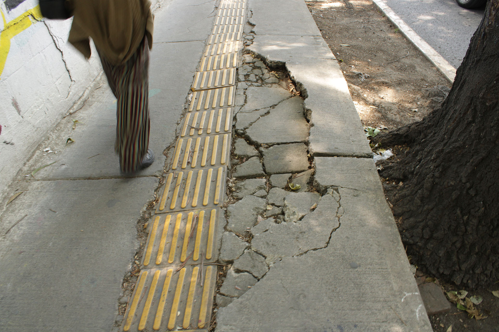
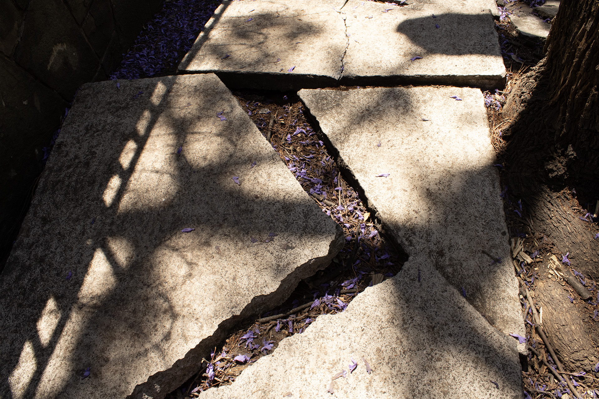
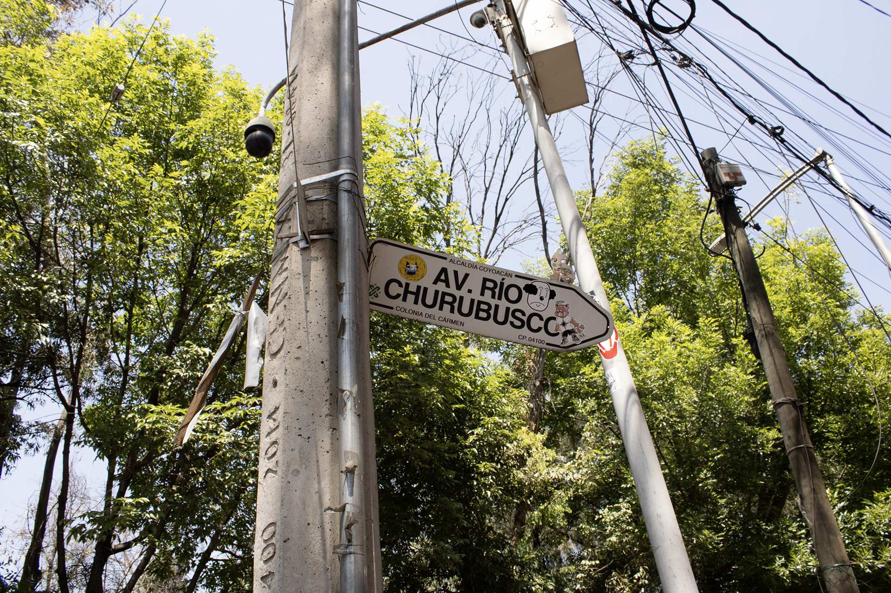
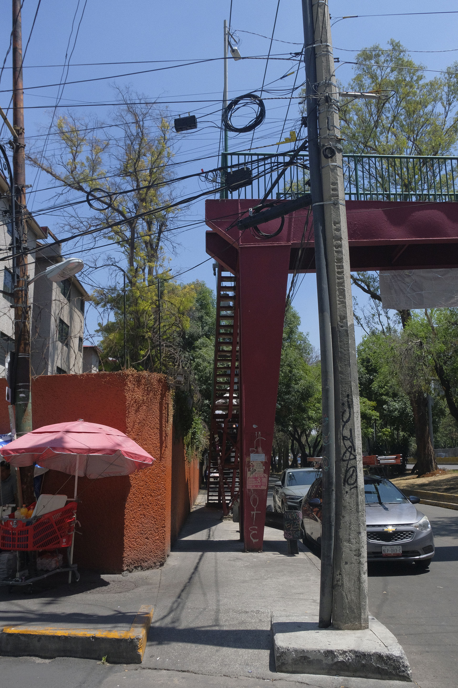
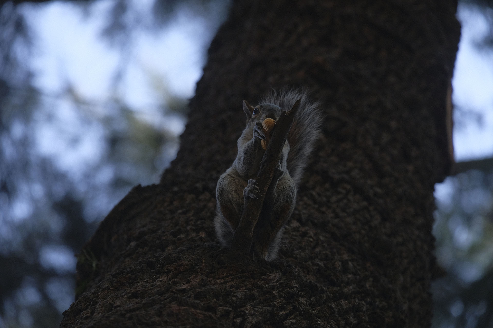
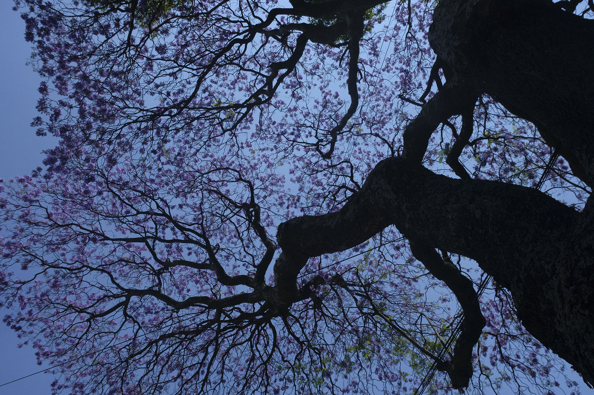

Caminar
No como traslado menor, sino como una práctica de observación situada. A pie, la ciudad deja de ser ruta eficiente y aparece como una secuencia de fricciones, pausas y decisiones.
Repositorio del proyecto
Caminar el método
Entrada
5 km/h explora qué se vuelve perceptible cuando la ciudad se recorre a velocidad humana.
El proyecto parte de una pregunta simple: ¿qué puede revelar caminar sobre una ciudad pensada para moverse rápido? A través de caminatas en distintas zonas de la Ciudad de México, el cuerpo se convierte en herramienta de lectura: observa, duda, espera, acelera, esquiva, se detiene y vuelve a preguntar.
No como traslado menor, sino como una práctica de observación situada. A pie, la ciudad deja de ser ruta eficiente y aparece como una secuencia de fricciones, pausas y decisiones.
Los recorridos se traducen en mapas conceptuales, tejidos y paisajes sonoros. Cada soporte conserva algo distinto: pensamiento, ritmo, materia y escucha.
La salida transmedia reúne publicación desplegable, instalación sonora sin pantalla y este repositorio web como archivo del proceso.
Caminar produjo una metodología. El tejido conservó sus ritmos. El sonido devolvió la ciudad al cuerpo.
Desplaza la mirada de la velocidad y el trayecto eficiente hacia la experiencia cotidiana del cuerpo al caminar.
Concepto
La movilidad urbana suele representarse desde la eficiencia, la velocidad, la conectividad y el flujo. Bajo esa mirada, caminar aparece como una fase secundaria del trayecto: el tramo previo o posterior al transporte. 5 km/h desplaza esa perspectiva y entiende caminar como una forma de conocimiento territorial.
A velocidad humana aparecen condiciones que los mapas funcionales y las métricas de flujo suelen dejar fuera: esperas, rodeos, pendientes, sombras, cruces, obstáculos, encuentros, desvíos y pequeñas decisiones corporales. La ciudad no solo se recorre; también marca el paso.
Las formas dominantes de pensar la movilidad privilegian el desplazamiento rápido y la infraestructura vehicular, mientras invisibilizan la experiencia cotidiana del cuerpo caminante. La pregunta crítica no es solo cómo llegar, sino qué ocurre entre salir y llegar.
Caminar permite mirar la movilidad desde la escala de quien negocia el espacio con el cuerpo. El proyecto no romantiza caminar: lo observa como práctica expuesta a desigualdades, fricciones y ritmos impuestos.
¿Qué se vuelve visible, rítmico y comunicable cuando caminamos la ciudad a 5 km/h?
Desarrollar un sistema transmedia de comunicación visual que traduzca la experiencia peatonal en mapas, tejidos y paisajes sonoros, para revelar los ritmos urbanos que organizan el movimiento del cuerpo.
5 km/h — Caminar el método es un proyecto transmedia de comunicación visual que investiga la movilidad urbana desde la experiencia peatonal. Frente a modelos centrados en velocidad, eficiencia vehicular e infraestructura, propone caminar como herramienta crítica para observar ritmos, fricciones y decisiones cotidianas que suelen pasar desapercibidas. A través de recorridos en distintas zonas de la Ciudad de México, se registran acciones como esperar, frenar, acelerar y desviarse, entendidas como respuestas del cuerpo ante las condiciones del entorno. Estos hallazgos se traducen en identidad visual, publicación impresa, instalación sonora y repositorio web. El proyecto incluye tejidos escaneables que activan paisajes sonoros basados en secuencias de movimiento, así como mapas conceptuales que comparan distintas percepciones del mismo método. Su objetivo es visibilizar la escala humana de la movilidad y promover otros imaginarios urbanos que no privilegian el automóvil sobre la experiencia cotidiana de caminar.
Caminar el método
El proyecto comenzó con una palabra amplia: movilidad. No existía una metodología cerrada, solo una inquietud inicial. Salir a caminar permitió que las preguntas dejaran de ser abstractas y se confrontaran con la ciudad real: sus ritmos, obstáculos, pausas y recorridos.
A partir de ahí, el método se construyó entre dos líneas complementarias: el hilo textual de Andrea, que nombraba dudas, hallazgos y relaciones; y el hilo material de Valentina, que traducía secuencias, repeticiones y movimientos al lenguaje del tejido.
La ciudad no solo se recorre.
Se escucha, se teje, se lee y se compara.
Caminar produjo método y partitura.
Mientras caminaba, Andrea registraba preguntas y observaciones. El texto no funcionó como explicación final, sino como herramienta para pensar en movimiento: unir puntos, detectar patrones, replantear hipótesis y convertir intuiciones en estructura metodológica.
Caminar también fue escribir con el cuerpo.
Paralelamente, Valentina desarrolló una lectura desde el tejido. Los pasos, pausas, aceleraciones y desvíos comenzaron a entenderse como secuencias traducibles a punto, repetición, tensión y ritmo.
El tejido no ilustró el método: ayudó a descubrirlo.
Lo que una nombraba, la otra lo estructuraba visual y materialmente. El texto abría preguntas; el tejido revelaba ritmo. El texto conectaba ideas; el tejido conectaba secuencias. El texto interpretaba la caminata; el tejido conservaba su cadencia.
La metodología surgió precisamente en ese cruce entre palabra y materia.
Esperar
Cuando el cuerpo queda detenido y el tiempo cambia de escala.
Frenar
Cuando el paso reduce su ritmo por una condición externa.
Acelerar
Cuando el cuerpo responde con velocidad para continuar.
Desviarse
Cuando la ruta se corrige, rodea o inventa otro camino.
No fuimos a aplicar un método existente. Fuimos a caminar hasta que, entre texto y tejido, apareció uno propio.
Ritmos urbanos
Cada caminata puede leerse como una composición. El cuerpo avanza, se detiene, retoma, corrige dirección y cambia de velocidad. Estos cambios producen un ritmo que no pertenece solo a quien camina: también es producido por calles, cruces, vehículos, banquetas, objetos, sombras y otros cuerpos.
Hay calles que aceleran, esquinas que hacen pausa, semáforos que se quedan en silencio, banquetas que rompen el paso y cruces que obligan otro tempo.
Una ruta no es una línea continua. Está hecha de cortes, repeticiones, pausas, cambios de intensidad y desvíos. Por eso los tejidos funcionan como partituras urbanas: convierten acciones corporales en secuencias que pueden leerse y escucharse.
En la instalación, las caminatas tejidas se escanean para activar paisajes sonoros construidos a partir de la experiencia. Conciste en traducir la estructura rítmica de cada recorrido; en dónde se pausa, dónde se corta, dónde se acumula tensión, dónde se acelera el paso.
Publicación
La publicación funciona como un objeto editorial de doble cara. Reproduce mapas conceptuales del proceso, cómo se fue construyendo la metodología mientras el cuerpo caminaba, observaba, registraba y conectaba puntos.
Un lado del fanzine reúne capas de pensamiento y observación. Los mapas de Andrea y Valentina se enciman para comparar cómo dos miradas recorren el mismo problema desde distintos puntos de atención.
La superposición puede leerse con filtros o micas de color para activar una perspectiva u otra. La intención no es separar autorías de forma decorativa, sino mostrar que toda metodología se construye desde posiciones parciales.
El reverso despliega un póster con cuatro caminatas traducidas a tejido. Cada una funciona como partitura urbana escaneable que al activarla, el visitante escucha una interpretación sonora del ritmo registrado en distintas zonas de la ciudad.
Puntos → pasos → línea → ruta → tejido → partitura → escucha.
La forma espiral permite narrar el método como algo que se despliega, se acumula vuelve sobre sí mismo y crece por capas.
El hilo une puntos, sostiene continuidad y permite pensar la caminata como línea de pensamiento.
El mapa busca mostrar relaciones entre atención, ritmo, cuerpo, pregunta y territorio.
Instalación
La instalación presenta las caminatas tejidas suspendidas o dispuestas en el espacio. El público puede escanearlas para activar paisajes sonoros. La experiencia evita la pantalla como centro: el protagonismo está en el tejido, el cuerpo que se acerca y el sonido que ocupa el lugar.
La persona se acerca a una pieza gráfica textil, la escanea y escucha una versión sonora de ese recorrido. Escucha cómo una caminata se convierte en pulso,pausa, secuencia y atmósfera urbana.
¿Cómo diseñar una experiencia sonora que no reduzca la caminata a una gráfica explicativa, sino que permita percibir su ritmo, sus interrupciones y sus tensiones con otro sentido corporal?
El tejido opera como registro material y como interfaz. Su lentitud conserva la lógica del caminar: punto a punto, paso a paso, secuencia por secuencia.
El sonido devuelve la caminata al cuerpo. Permite percibir ritmos, interrupciones y tensiones sin reducirlas solo a datos cuantificables.
Archivo
Esta web funciona como archivo vivo del proyecto. Busca documentar el proceso conceptual, metodológico y material que sostiene la exposición.
Escala barrial, comercio, pausas, sombra, paseo y cambios de densidad peatonal.
Entorno residencial donde aparecen continuidades, obstáculos discretos y decisiones de trayecto.
Alta fricción peatonal: saturación, comercio, cruces, obstáculos y negociación constante entre cuerpos.
Corredor de gran escala donde se percibe el contraste entre infraestructura monumental, velocidad urbana y experiencia peatonal.
Las fotografías documentan condiciones del recorrido: banquetas, cruces, sombras, cuerpos, obstáculos, señales, vegetación y elementos que modifican la percepción del trayecto. Funcionan como evidencia sensible de análisis del territorio.

Infraestructura
Discontinuidad del paso y descuido de accesibilidad.

Infraestructura
La superficie obliga atención y corrección del paso.

Obstrucción
Postes, cableado y objetos que interrumpen lectura y recorrido.

Cruce
Ritmo impuesto por el espacio disponible y los tiempos del cruce.

No humano
Agentes no humanos que capturan atención y modifican la experiencia.

Entorno vivo
La sombra, el árbol y la altura modifican la escala del cuerpo.
El proyecto trabaja con una misma lógica expandida a distintos medios: las acciones del cuerpo producen secuencias; las secuencias se vuelven patrones; los patrones se traducen a tejido; el tejido se escribe y se lee como partitura sonora.
Sigue los hilos de pensamiento, organiza preguntas, perspectivas y relaciones. Localiza formas de atención.
Materializa la caminata desde la lentitud, la repetición y la acumulación de puntos. Teje las ideas y datos registrados.
Traduce el ritmo de la caminata en pulso, pausa, corte, tensión y atmósfera. Demuestra la sensibilidad del cuerpo para leer la ciudad desde los sentidos.
Acción corporal = ritmo · Secuencia = patrón · Tejido = partitura · Escaneo = escucha
El repositorio registra cómo el proyecto cambió: de una exploración sobre movilidad peatonal a un sistema transmedia donde caminar construye método, el tejido conserva ritmo y el sonido activa memoria urbana.
| Etapa | Enfoque | Resultado |
|---|---|---|
| 1 | Cierre conceptual | Abstract, pregunta, objetivos y discurso curatorial |
| 2 | Publicación | Fanzine desplegable con mapas conceptuales y póster escaneable |
| 3 | Tejidos | Caminatas tejidas como partituras urbanas |
| 4 | Sonido | Paisajes sonoros por ruta y reglas de traducción |
| 5 | Instalación | Montaje sin pantalla: piezas textiles, escaneo y bocinas |
| 6 | Repositorio | Archivo web actualizado y documentación del proceso |